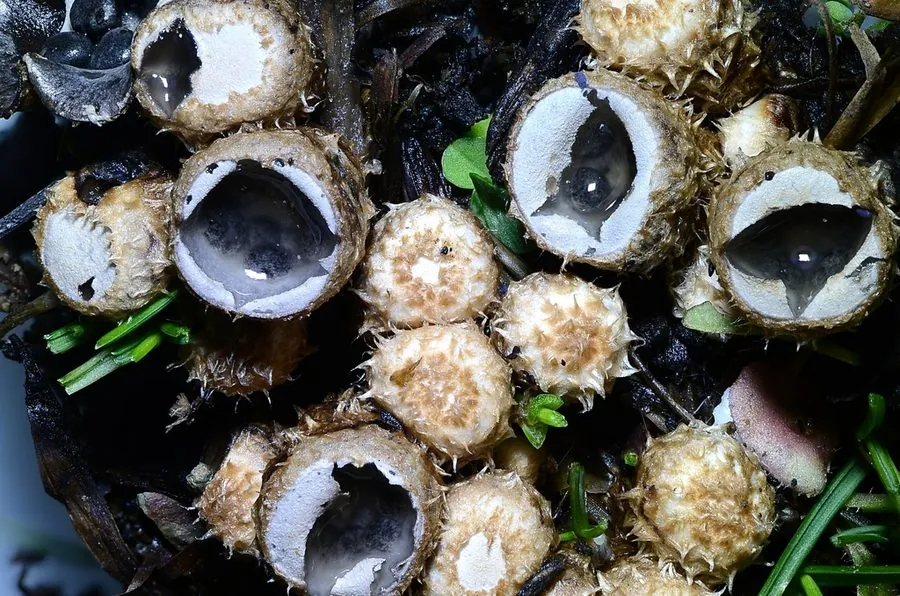

真菌 · 真菌界
粪生黑蛋巢菌 Cyathus stercoreus

粪生黑蛋巢菌的杯状子实体像小鸟巢，里面装着黑色“小蛋”（包被小体），常见于粪堆和堆肥上，不可食用。
- 分类
- 门担子菌门纲伞菌纲目伞菌目科鸟巢菌科属黑蛋巢菌属
- 栖息环境
- 食草动物粪便、堆肥与腐熟有机物上，温暖季节常见
- 地理分布
- 全球温带与热带广泛分布，中国各地常见
- 保护级别
- 暂无评估（野生真菌）
物种志
粪生黑蛋巢菌是担子菌门鸟巢菌科的真菌，子实体呈杯状或漏斗状，高 0.5–1.5 cm，直径约 1 cm，外表面有粗毛，内表面光滑。杯内底部生有数枚扁圆形的包被小体（俗称“蛋”），黑色或深褐色，形似鸟巢里的小蛋。包被小体由菌丝索固定，雨滴溅落时会被弹出，借此传播孢子。
粪生黑蛋巢菌生于食草动物的粪便、堆肥与腐熟的有机物上，是典型的粪生真菌，在温暖季节常见。它靠分解粪便中的有机质生长，在物质循环中起清道夫作用。粪生黑蛋巢菌不可食用；其“鸟巢”状的杯体和会弹射的包被小体，是观察真菌孢子传播方式的好材料。这类真菌也可用于处理畜禽粪便、制作有机肥，在生态农业中有一定应用前景。
形态与习性
- 子实体杯状或漏斗状，高 0.5–1.5 cm
- 包被小体黑色或深褐色，形似鸟蛋
- 外表面有粗毛，内表面光滑
- 习性粪生真菌，生于粪便与堆肥
- 食用性不可食用
- 传播包被小体被雨滴弹出
趣味知识
- 粪生黑蛋巢菌的杯状子实体里装着几颗黑色“小蛋”，像鸟巢一样。
- 这些“小蛋”叫包被小体，雨滴打落时会被弹出，帮助传播孢子。
- 它专门长在动物粪便和堆肥上，能加速粪便分解。